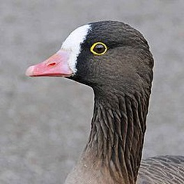
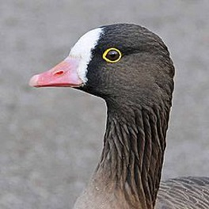

|  |
|---|
Mazā zoss (Anser erythropus) ir neliela auguma pelēko zosu ģints (Anser) ūdensputnu suga, kas ligzdo galvenokārt Āzijas ziemeļos, bet nelielā skaitā tā ligzdo arī Eiropā.[1] Tās tuvākā radiniece ir baltpieres zoss, ar kuru reizēm veido jauktus barus. Mazā zoss ir apdraudēta suga, un to ir aizliegts medīt.
Latvijā mazā zoss ir reta caurceļotāja, tomēr patiesā situācija ir neskaidra. Daži no novērojumiem nav pienācīgi dokumentēti un eksistē tikai baumu līmenī.
Mazā zoss ir ļoti līdzīga baltpieres zosij, bet ir par to mazāka un slaidāka, tā ir tikai nedaudz lielāka nekā meža pīle.Galva apaļa, ap acīm koši dzelteni gredzeni, kājas oranžas, bet nelielais knābis rozā. Apspalvojums pelēkbrūns gan uz muguras, gan vēdera, lai gan pieaugušām zosim uz vēdera var būt melni laukumi, zemaste balta. Piere balta. Jaunie putni līdzīgi pieaugušajiem, bet to piere ir tumša, uz vēdera nav melno laukumu un kājas ir dzeltenīgi pelēkas.
Mazā zoss ligzdo retinātā mežu tundrā, kurā galvenokārt aug krūmi, purvu un ezeru tuvumā, ziemo atklātā ainavā, tīrumos ezeru tuvumā.Ligzdošanas teritoiju mazā zoss pamet laikā no augusta vidus līdz septembra vidum.
Mazā zoss ir izteikta veģetāriete.Ligzdošanas sezonas laikā tā barojas ar zāli un jaunajiem krūmu dzinumiem, bet migrācijas periodā un ziemā tās galvenā barība ir sēklas un graudi, piemēram, kvieši un auzas. Ziemas periodā mazās zosis veido kopīgus barus ar citu sugu zosīm.
Mazās zosis sāk ligzdot maija beigās vai jūnija sākumā. Ligzda ir sekla iedobe purvainā augsnē, tā vienmēr atrodas zem kāda krūma vai lielāka zāles cera. Ligzda tiek izklāta ar augiem un dunām. Dējumā ir 3—7 olas. Inkubācijas periods ilgst 25—28 dienas. Jaunie putni sāk lidot 35—40 dienu vecumā.